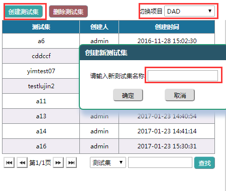
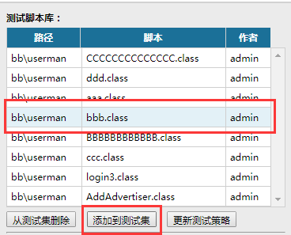
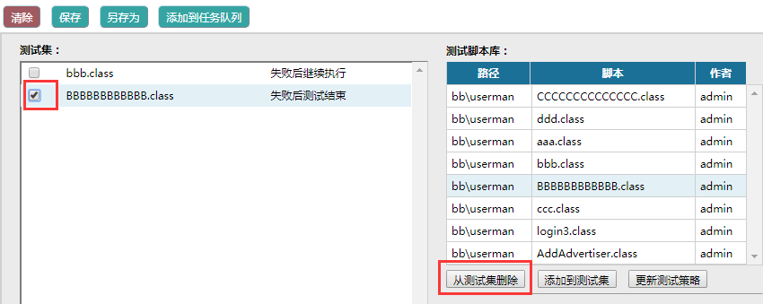

测试集：是一组有顺序的，包含测试策略的测试脚本集合，用来让系统按照指定的逻辑和顺序来运行测试脚本。
测试策略：在创建测试集中为每个测试脚本设置的执行策略，主要指脚本执行失败的处理方案。脚本执行失败后的重复次数最多只能为9次。
测试任务：用一个测试集生成的临时脚本执行队列，用来执行具体的测试活动。每个测试任务与源测试集之间都不存在引用关系，所以测试集可以被反复创建测试任务
环境配置参数：是一组键值对，用来为测试脚本在测试过程中提供外部变量，作用与测试数据文件相同，具体被配置和调用方法请参考第4.1章节
下面是创建一个测试集、配置然后生成测试任务的步骤。
|
1. 选择要创建测试集的项目，点击'创建测试集'按钮，输入新测试集名称并确定。

|
2. 从右侧脚本目录中选择脚本添加到测试集中。

|
3. 测试集中的脚本也可以移出，只需选中脚本并点击'从测试集删除'。

|